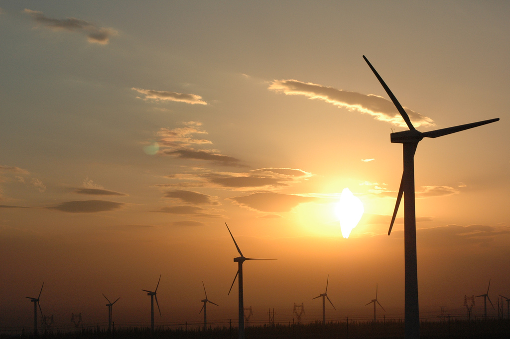

Modern wind turbines tower above one of their ancestors-an old windmill used for pumping water. Credit: Warren Gretz We have been harnessing the wind's energy for hundreds of years. From old Holland to farms in the United States, windmills have been used for pumping water or grinding grain. Today, the windmill's modern equivalent - a wind turbine - can use the wind's energy to generate electricity. Wind turbines, like windmills, are mounted on a tower to capture the most energy. At 100 feet (30 meters) or more aboveground, they can take advantage of the faster and less turbulent wind. Turbines catch the wind's energy with their propeller-like blades. Usually, two or three blades are mounted on a shaft to form a rotor. A blade acts much like an airplane wing. When the wind blows, a pocket of low-pressure air forms on the downwind side of the blade. The low-pressure air pocket then pulls the blade toward it, causing the rotor to turn. This is called lift. The force of the lift is actually much stronger than the wind's force against the front side of the blade, which is called drag. The combination of lift and drag causes the rotor to spin like a propeller, and the turning shaft spins a generator to make electricity.
 windy turbinWind turbines can be used as stand-alone applications, or they can be connected to a utility power grid or even combined with a photovoltaic (solar cell) system. For utility-scale sources of wind energy, a large number of wind turbines are usually built close together to form awind plant. Several electricity providers today use wind plants to supply power to their customers. Stand-alone wind turbines are typically used for water pumping or communications. However, homeowners, farmers, and ranchers in windy areas can also use wind turbines as a way to cut their electric bills. Small wind systems also have potential as distributed energy resources. Distributed energy resources refer to a variety of small, modular power-generating technologies that can be combined to improve the operation of the electricity delivery system.